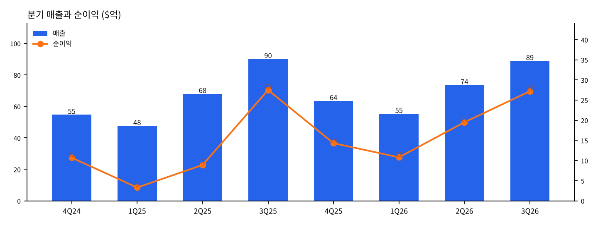
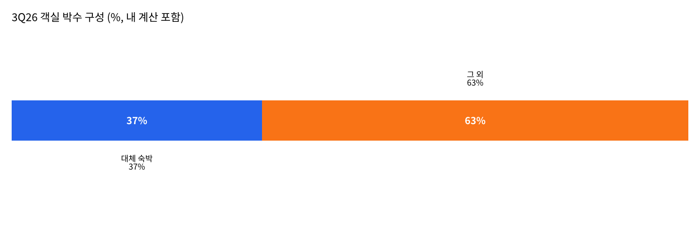
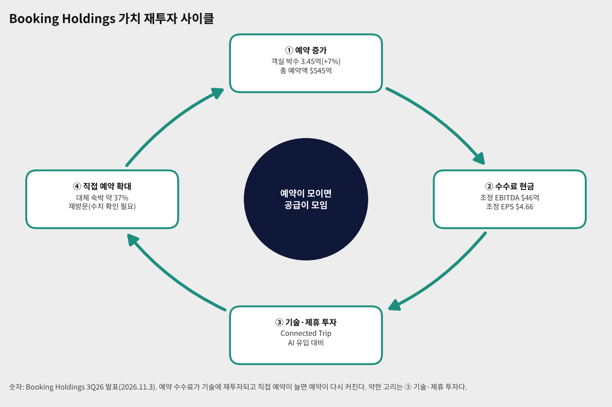

Booking Holdings는 숙소·항공·렌터카 예약을 중개하고 수수료를 받는다. 이용자가 늘수록 숙소 공급이 몰리고, 공급이 많을수록 이용자가 모이는 양면 구조다.
| 항목 | 내용 |
|---|---|
| 종목 | Booking Holdings (BKNG) · NASDAQ · 온라인 여행 · 코네티컷 노워크 |
| 최근 분기(3Q26) | 객실 박수 3.45억, 총 예약액 $545억, 조정 EPS $4.66 |
| 핵심 브랜드 | Booking.com, Priceline, Agoda, KAYAK, OpenTable |
| 직원 수 | 약 24,300명(트레이딩뷰) |
| 멀티플 | PER·PEG·P/S는 08~10 항목 표 참조 |
| 직책 | 인물 | 역할·특징 |
|---|---|---|
| CEO | 글렌 포겔(Glenn Fogel) | 2027 전망은 4Q 결과와 함께 낸다고 밝힘 |
| CFO | 이웃 스테인베르헌(Ewout Steenbergen) | (회사 공개 자료 기준) |
경영 스타일: 이익 환원형 성장. 영업현금으로 자사주를 대규모로 사면서 기술·제휴·결제 연결에 투자한다.
숙소·항공·교통·결제를 한 여정으로 묶어 재방문과 직접 예약을 늘리려는 방향이다.
LLM 경유 예약은 객실 박수의 1% 미만이지만 AI 에이전트가 예약 입구가 될 가능성을 회사가 주시한다.
다음 실적발표는 세 가지 질문에 답하는 자리다.
1. 예약 성장이 가이던스대로 둔화하나?
2. FTC 관련 매출 감소가 이어지나?
3. AI 에이전트가 예약 입구를 바꾸나?
한 줄 판정 규칙: 첫 질문(예약 성장)이 가이던스를 넘으면 약한 고리인 ④ 직접 예약 확대가 이어지는 것으로 본다.
일정: 4Q 실적 발표는 2027.02.25 예정(트레이딩뷰). 2027 전망이 함께 나온다.
| 분기 | 매출 | 순이익 | EPS | 조정 EPS | 특이 사항 |
|---|---|---|---|---|---|
| 4Q24 | $54.7억 | $10.7억 | 1.28 | 1.66 | |
| 1Q25 | $47.6억 | $3.3억 | 0.40 | 0.99 | |
| 2Q25 | $68.0억 | $8.9억 | 1.10 | 2.22 | |
| 3Q25 | $90.1억 | $27.5억 | 3.38 | 3.98 | |
| 4Q25 | $63.5억 | $14.3억 | 1.77 | 1.95 | |
| 1Q26 | $55.3억 | $10.8억 | 1.36 | 1.14 | |
| 2Q26 | $73.5억 | $19.5억 | 2.53 | 2.54 | |
| 3Q26 | $88.9억 | $27.2억 | 3.61 | 4.66 | FTC 관련 매출 감소 반영, 조정 EPS +17% |
매출은 트레이딩뷰 스캐너의 분기 총매출이라 회사가 발표한 순매출과 다를 수 있다. 2026년 주식분할(25대 1)이 반영된 값이다. 3Q26 매출은 FTC 관련 매출 감소가 반영돼 회사 조정 매출($98억)보다 작다. 매출·순이익·EPS(GAAP 희석)는 트레이딩뷰 스캐너, 조정 EPS는 트레이딩뷰 실적 페이지의 Reported 값이다. 분기 정렬은 오래된 분기→최신이다.

흐름 요약: 최근 분기 매출은 $88.9억로 전년 동기 $90.1억 대비 -1.3%, 순이익은 $27.2억(전년 $27.5억)다. 최근 4분기 GAAP EPS는 $9.27, 조정 EPS는 $10.29다.
| 항목 | 내용 | 3Q26 비중 | 비고 |
|---|---|---|---|
| 대체 숙박 | 주택·아파트 등 | 약 37% | 객실 박수 기준 |
| 그 외 숙박(내 계산) | 호텔 등 | 약 63% | 100%에서 뺀 값 |

대체 숙박 비중이 커질수록 호텔 중심 경쟁자(Marriott·Hilton)보다 Airbnb와 더 직접 경쟁한다.
Booking Holdings는 여행을 더 쉽게 예약하게 하는 세계 최대 여행 연결 플랫폼을 목표로 한다.
| 축 | 내용 |
|---|---|
| 규모 | 객실 박수 3.45억/분기 |
| 수익 | 예약 수수료 |
| 환원 | 9개월 자사주 $105억 |

| 이동평균 | 값 | 종가 대비 | 위치 |
|---|---|---|---|
| 5일선 | $154.74 | -3.8% | 종가 아래 |
| 20일선 | $156.66 | -5.0% | 종가 아래 |
| 50일선 | $160.52 | -7.3% | 종가 아래 |
| 100일선 | $177.25 | -16.0% | 종가 아래 |
| 200일선 | $173.85 | -14.4% | 종가 아래 |
52주 고가 $220.81(2025-12-16)·저가 $146.28(2026-10-28) 범위에서 종가 $148.83는 모든 이동평균선 아래이고.
| 규칙 | 기준 | 현재 값 | 신호 |
|---|---|---|---|
| 장기 추세 필터 | 종가 vs 200일선 | $148.83 < $173.85 | 매도 |
| 중장기 교차 | 50일선 vs 200일선 | $160.52 < $173.85 | 매도 |
| 단기 교차 | 20일선 vs 50일선 | $156.66 < $160.52 | 매도 |
| 돈키언 채널 | 55일 고가 $203.26 / 저가 $146.28 | 중간값 $174.77 아래 | 매도 |
| 1개월 모멘텀 | 21거래일 수익률 | -6.0% (기준 $158.38) | 매도 |
| 3개월 모멘텀 | 63거래일 수익률 | -29.0% (기준 $209.62) | 매도 |
| 6개월 모멘텀 | 126거래일 수익률 | -6.8% (기준 $159.68) | 매도 |
| 12개월 모멘텀 | 252거래일 수익률 | -22.2% (기준 $191.32) | 매도 |
| 종합 (8개 평균) | -1.00 | 강한 매도 |
해석: 매수 신호 0개(없음), 매도 신호 8개(장기 추세 필터, 중장기 교차, 단기 교차, 돈키언 채널, 1개월 모멘텀, 3개월 모멘텀, 6개월 모멘텀, 12개월 모멘텀). CTA 점수 -1.00(강한 매도). 14일 ATR $6.87 (4.6%), 52주 고가 $220.81 · 저가 $146.28.
| 가격 | 기준 | 무엇이 바뀌나 |
|---|---|---|
| $209.62 | 3개월 모멘텀 기준가 | 종가가 이 가격 위면 3개월 신호 매수 |
| $203.26 | 55일 고가 | 돌파 시 채널 상단 갱신 |
| $191.32 | 12개월 모멘텀 기준가 | 종가가 이 가격 위면 12개월 신호 매수 |
| $174.77 | 돈키언 중간값 | 55일 채널 중간값 위/아래로 신호가 바뀜 |
| $173.85 | 200일선 | 종가가 이 선 위/아래인지로 장기 추세 신호가 바뀜 |
| $159.68 | 6개월 모멘텀 기준가 | 종가가 이 가격 위면 6개월 신호 매수 |
| $158.38 | 1개월 모멘텀 기준가 | 종가가 이 가격 위면 1개월 신호 매수 |
| $146.28 | 55일 저가 | 이탈 시 채널 하단 갱신 |
가격 수준은 신호가 바뀌는 기준선일 뿐 진입·청산 가격 제안이 아니다. 20일/50일 교차는 이동평균 자체가 움직여 단일 가격으로 표시하지 않았다. 일봉·주봉은 종가 기준 직접 계산(고저 데이터 미사용)이다.
| 악재 요인 | 내용 | 강도 |
|---|---|---|
| FTC 관련 | 매출 인식 감소(보고 −1%) | 중간 |
| 성장 둔화 | 4Q 객실 박수 +1~3% 가이던스 | 중간 |
| AI 중개 | LLM 유입은 아직 1% 미만 | 참고 |
| 티커 | 회사 | PER(TTM) | PEG | P/S | EPS 성장(YoY) |
|---|---|---|---|---|---|
| BKNG | Booking Holdings | 14.5배 | 0.89 | 3.95배 | +16% |
| EXPE | Expedia | 14.2배 | 0.22 | 1.85배 | +64% |
| ABNB | Airbnb | 32.8배 | 1.27 | 7.71배 | +27% |
| MAR | Marriott | 41.7배 | 7.34 | 4.06배 | +6% |
| HLT | Hilton | 49.0배 | 6.89 | 6.64배 | +7% |
비교 결론: Booking Holdings의 PER 14.5배는 Expedia보다 높고 Airbnb·Marriott·Hilton보다 낮다. PEG 0.89는 Expedia(0.22)보다 높고 Airbnb(1.27)·Marriott·Hilton보다 낮다.
현금·부채는 트레이딩뷰 스캐너 값이다. 영업현금 대부분을 자사주 매입에 쓴다.
| 지표 | 값 | 출처 | 해석 |
|---|---|---|---|
| 현금·단기투자 | $160억 | 트레이딩뷰 스캐너(최근 분기) | |
| 총부채 | $206억 | 트레이딩뷰 스캐너(최근 분기) | |
| 순부채(부채−현금) | $46억 | 내 계산 | 현금 대비 부채 부담 |
| 잉여현금흐름(TTM) | $92억 | 트레이딩뷰 스캐너 | |
| TTM 매출 | $281억 | 트레이딩뷰 스캐너 |
| 기준 | 매출 | P/S | 비고 |
|---|---|---|---|
| 내 계산(종가 ÷ 최근 4분기 매출 합계) | $281.2억 | 3.95배 | 시총은 정렬용 데이터에서만 사용 |
| 동종(트레이딩뷰) | – | EXPE 1.85배 · ABNB 7.71배 · MAR 4.06배 · HLT 6.64배 | 11.19 |
해석: 부채가 현금보다 커서 순부채 상태다(아래 표). 자사주 매입 규모가 크므로 현금흐름이 줄면 매입이 먼저 줄어든다(내 해석).
EBITDA는 영업활동의 현금 창출력을 보는 지표이고, PEG는 PER을 EPS 성장률로 나눈 값이다. EBITDA·FCF는 트레이딩뷰 TTM 값이다.
| 지표 | 값 | 산출 |
|---|---|---|
| EBITDA(TTM) | $102억 | 트레이딩뷰 스캐너 |
| EBITDA 마진 | 36.3% | EBITDA ÷ TTM 매출(내 계산) |
| FCF 마진 | 32.7% | FCF ÷ TTM 매출(내 계산) |
| PER(GAAP TTM) | 16.1배 | $148.83 ÷ $9.27 |
| PER(조정 TTM) | 14.5배 | $148.83 ÷ $10.29 |
| 방식 | PER | EPS 성장률 | PEG | 판정 |
|---|---|---|---|---|
| 조정 EPS (TTM $10.29) | 14.5배 | +16% ($8.85 → $10.29) | 0.89 | 투자 적격 |
| GAAP EPS (TTM $9.27) | 16.1배 | +50% ($6.16 → $9.27) | 0.32 | 적극 매수 |
판정: 조정 EPS 기준 PEG 0.89 → 1.0 이하(투자 적격) PEG 기준은 1.0 이하 투자 적격, 0.5 이하 적극 매수다. EPS 성장률은 최근 4분기 EPS 합계를 직전 4분기 합계와 비교한 값(내 계산)이고, 일회성 항목이 있으면 조정 EPS 행을 함께 본다.

Booking Holdings의 사이클: 예약 수수료가 기술·제휴에 재투자돼 직접 예약과 공급을 늘리고, 그것이 다시 예약을 키우는 순환이다.
| 고리 | 현재 숫자·근거 |
|---|---|
| ① 예약 증가 | 3Q26 객실 박수 3.45억(+7%) · 총 예약액 $545억(+10%) |
| ② 수수료 현금 | 조정 EBITDA $46억(+9%) · 조정 EPS $4.66(+17%) |
| ③ 기술·제휴 투자 | 투자 금액은 보고서에 없음(내 해석) |
| ④ 직접 예약 확대 | 대체 숙박 약 37%(객실 박수 기준) |
사이클의 특징: 약한 고리는 ③ 기술·제휴 투자다(투자 규모 수치가 보고서에 없다). "(내 해석)"은 보고서 수치가 아닌 해석이다.